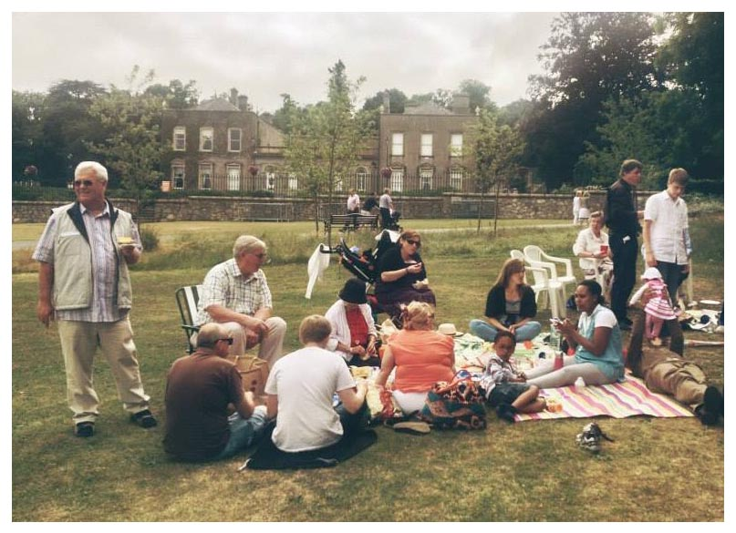

At South City Church you can expect warm friendly people, relaxed environment, relevant worship, and God's word preached in a compelling way.
Expect CommunitySouth City Church is a close community of believers in Jesus. We place a high priority on caring for each other and being part of each other's lives.
Expect Love At South City Church you won't leave without feeling loved. Come as you are! We're all sorts here but we find our commonality at the foot of the cross.
Expect God We believe that Jesus has the power to change lives and we expect God's presence in every meeting. We believe that in God's presence there is fullness of joy and healing for the broken.